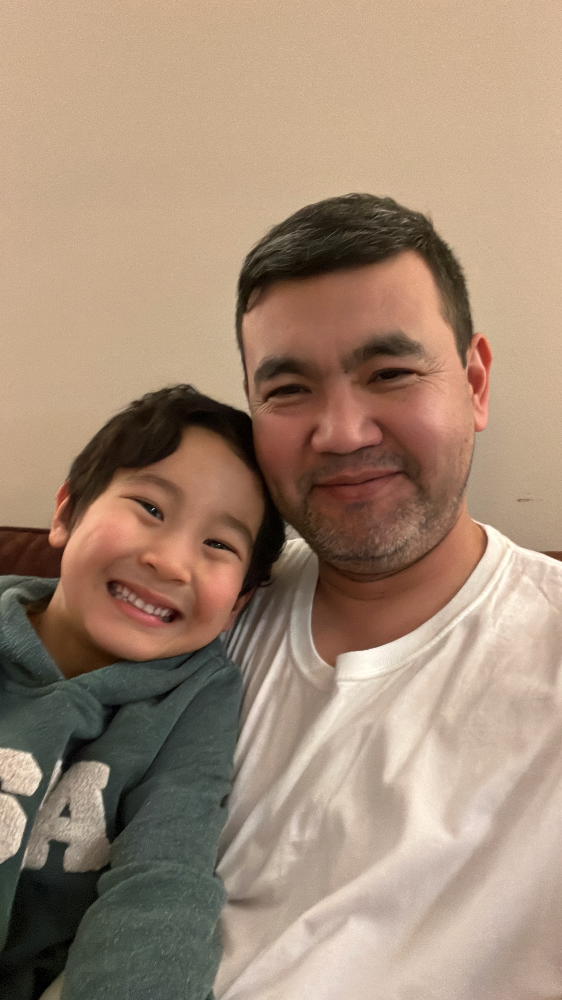

This is my work path and a collection of my projects and achievements.
Engineer with a background in network security, embedded systems, and cloud engineering. Currently pursuing a Master of Science in Software Engineering at Cleveland State University. Experienced in Linux, AWS, Docker, Kubernetes, Jenkins, CI/CD, Python, and Java. Proven track record in defending critical infrastructures against cyber threats (e.g., large-scale DDoS mitigation), designing secure communication systems, and leading innovation projects in AI voice agents and secure telephony. Passionate about building secure, reliable, and scalable systems aligned with standards such as IEC 62443.